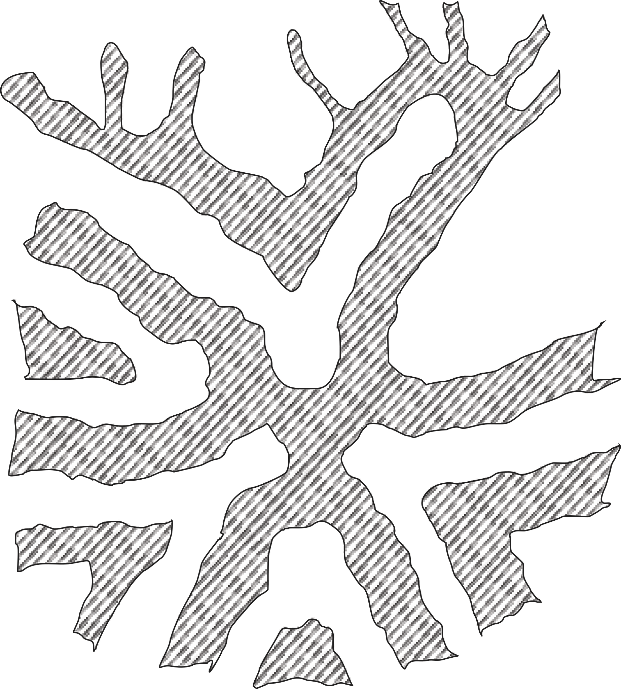
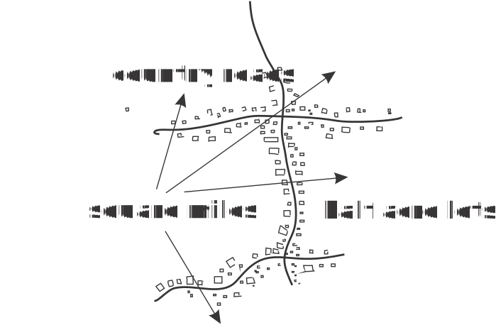
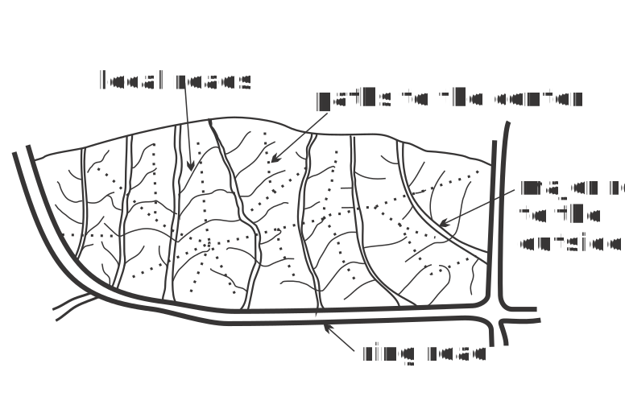

A pattern language cards
[1] Independent regions
[2] The distribution of towns
[3] City country fingers

[4] Agricultural valleys
[5] Lace of country streets

[6] Country towns

[7] The countryside
[8] Mosaic of subcultures
[9] Scattered work
[10] Magic of city
[11] Local transport areas

[12] Community of 7000
[13] Subculture boundary
[14] Identifiable neighborhood
[15] Neighborhood boundary
[16] Web of public transportation
Technology
Contents
Databases Server side Front-end Task-trackingDatabases
- MySql: Doctrine2, Propel
- Mongo: Mongoose
Server side
- PHP: Symphony, Laravel
- Java: Spring
- Python: Django
Front-end
- React.js
- Angular.js
- Zurb Foundation
- MDL
Projects
Keep calm and wait when information about projects will be available
Projects
Keep calm and wait when record in blog will appear